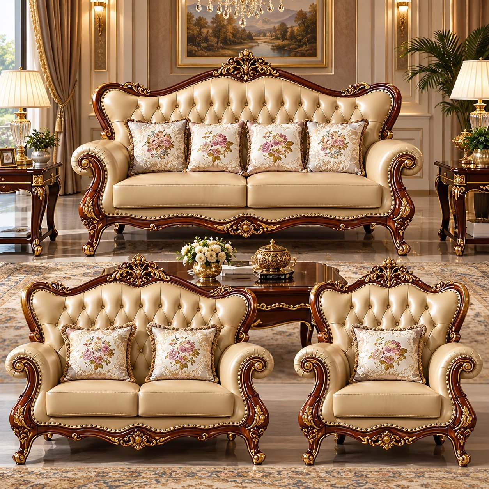
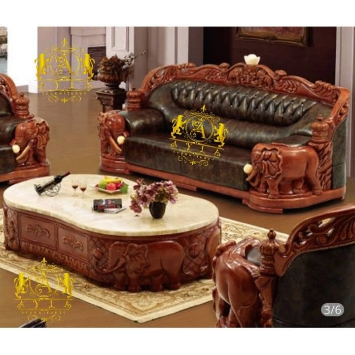
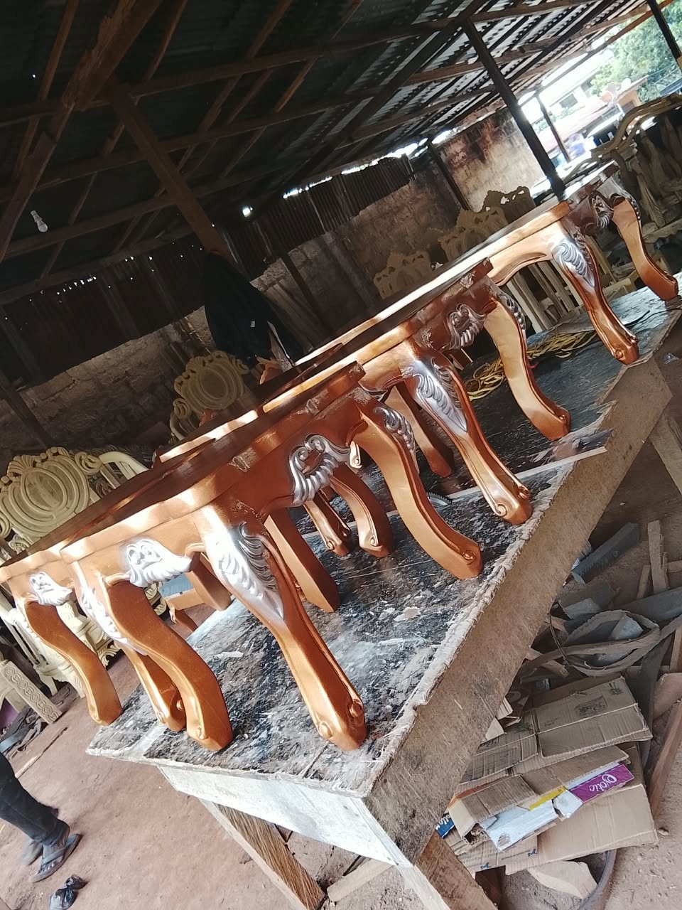
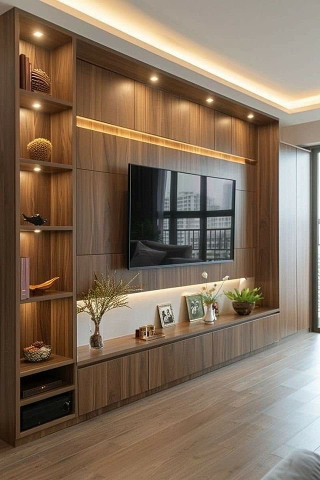

Respect for craftsmanship
We value the skill, patience and attention to detail behind beautifully considered furniture and woodwork.

THE STORY OF OKEOSISI
More than 38 years of experience, shaped by a lasting appreciation for classic furniture and considered craftsmanship.
DISCOVER OUR STORY ↓EXPERIENCE THAT ENDURES
Some things become more valuable when they are made to last.
Okeosisi General Service Nigeria Limited is a Nigerian company with more than 38 years of experience. Our story is rooted in an appreciation for furniture, distinctive design and the skill involved in creating pieces with presence.
We believe that a well-chosen piece does more than fill a room. It brings character, creates atmosphere and gives a space an identity of its own.
From antique and classic furniture inspiration to distinctive woodwork, we approach our work with respect for detail and an enduring sense of style.
EXPLORE THE COLLECTION ↗
OUR POINT OF VIEW
Our approach is guided by a few simple principles that shape how we think about furniture and the spaces it helps create.
We value the skill, patience and attention to detail behind beautifully considered furniture and woodwork.
We are drawn to expressive forms, rich materials and classic designs that retain their appeal beyond a passing trend.
Decades of experience matter most when knowledge and practical skills can be passed on to the next generation.

A LEGACY IN MOTION
With over 38 years of experience, Okeosisi represents a long-standing commitment to its field. The company also recognises the importance of developing practical skills and creating room for learning.
ROOTED IN NIGERIA
Based at 59 Hilltop Road, Abakaliki, Ebonyi State, Okeosisi serves customers across Nigeria. For product enquiries, delivery details and individual quotations, our team is available by phone.
SPEAK WITH OUR TEAM ↗
PHOTOGRAPHY NOTE
The photographs on this page are editorial reference images used to illustrate furniture styles and craftsmanship. They are not represented as photographs of Okeosisi's actual inventory or completed projects.CONTINUE THE JOURNEY
Explore the collection or speak with our team about what you have in mind.
EXPLORE THE COLLECTION ↗